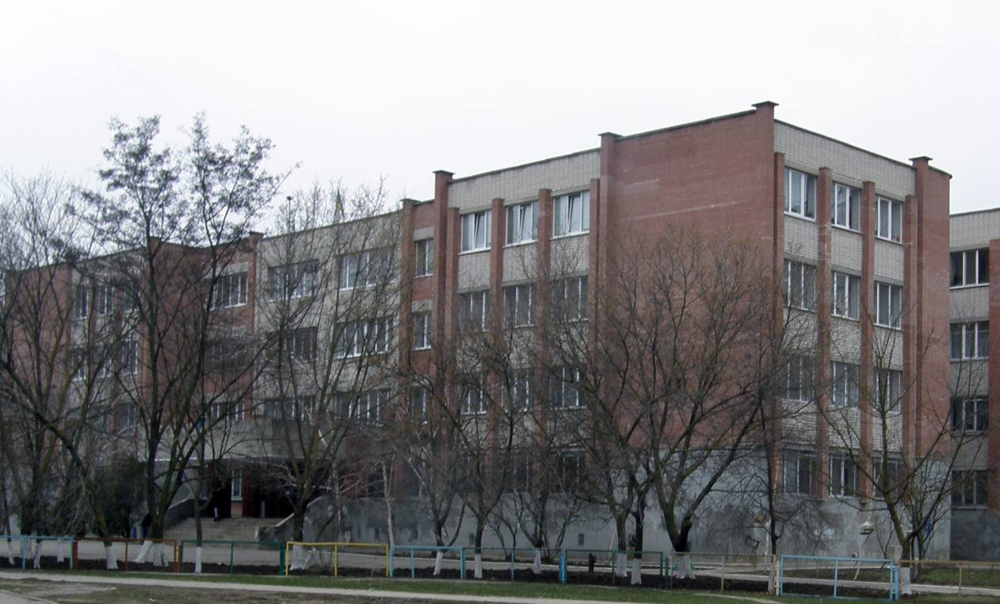

ХЕРСОНСЬКИЙ НАВЧАЛЬНО-ВИХОВНИЙ КОМПЛЕКС
"ДОШКІЛЬНИЙ НАВЧАЛЬНИЙ ЗАКЛАД -
СПЕЦІАЛІЗОВАНА ШКОЛА З ПОГЛИБЛЕНИМ
ВИВЧЕННЯМ АНГЛІЙСЬКОЇ МОВИ І СТУПЕНЯ -
ГІМНАЗІЯ" №56
ХЕРСОНСЬКОЇ МІСЬКОЇ РАДИ
«Освіта – скарб, праця – ключ до нього»
Наша школа

Історія школи
1990 р. - відкриття школи
1991 р. - початок експериментальної роботи щодо впровадження інноваційних технологій
1994 р. - член Міжнародної асоціації
1997 р. - обласна школа-лабораторія з питань розвивального навчання
2001 р. - впровадження профільного та передпрофільного навчання
2004 р. - переможець обласного конкурсу серед шкіл Херсонської області "Школа нової генерації"
2007 р. - навчально-виховний комплекс "Дошкільний навчальний заклад - загальноосвітня школа І-ІІІ ступенів - гімназія №56"
2015 р. - Херсонський навчально-виховний комплекс «Дошкільний навчальний заклад – спеціалізована школа з поглибленим вивченням англійської мови І ступеня – гімназія» №56 Херсонської міської ради